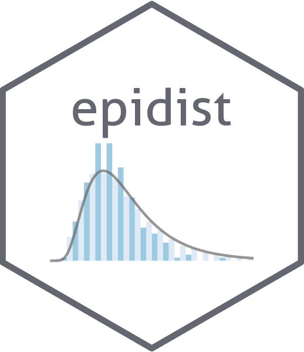

Convert from event based to incidence based data
event_to_incidence.RdConvert from event based to incidence based data
Usage
event_to_incidence(data, by = c())See also
Other preprocess:
calculate_censor_delay(),
combine_obs(),
construct_cases_by_obs_window(),
linelist_to_cases(),
linelist_to_counts(),
reverse_obs_at()